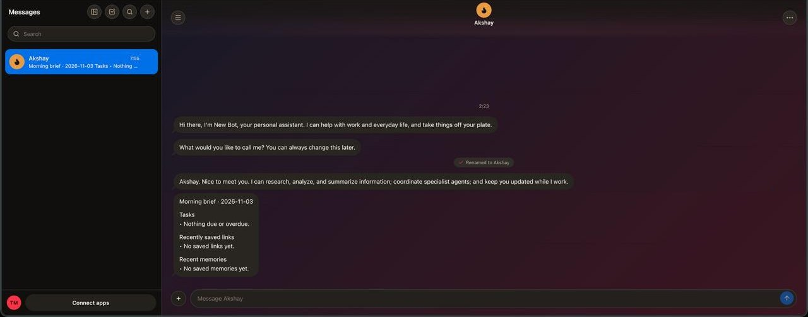
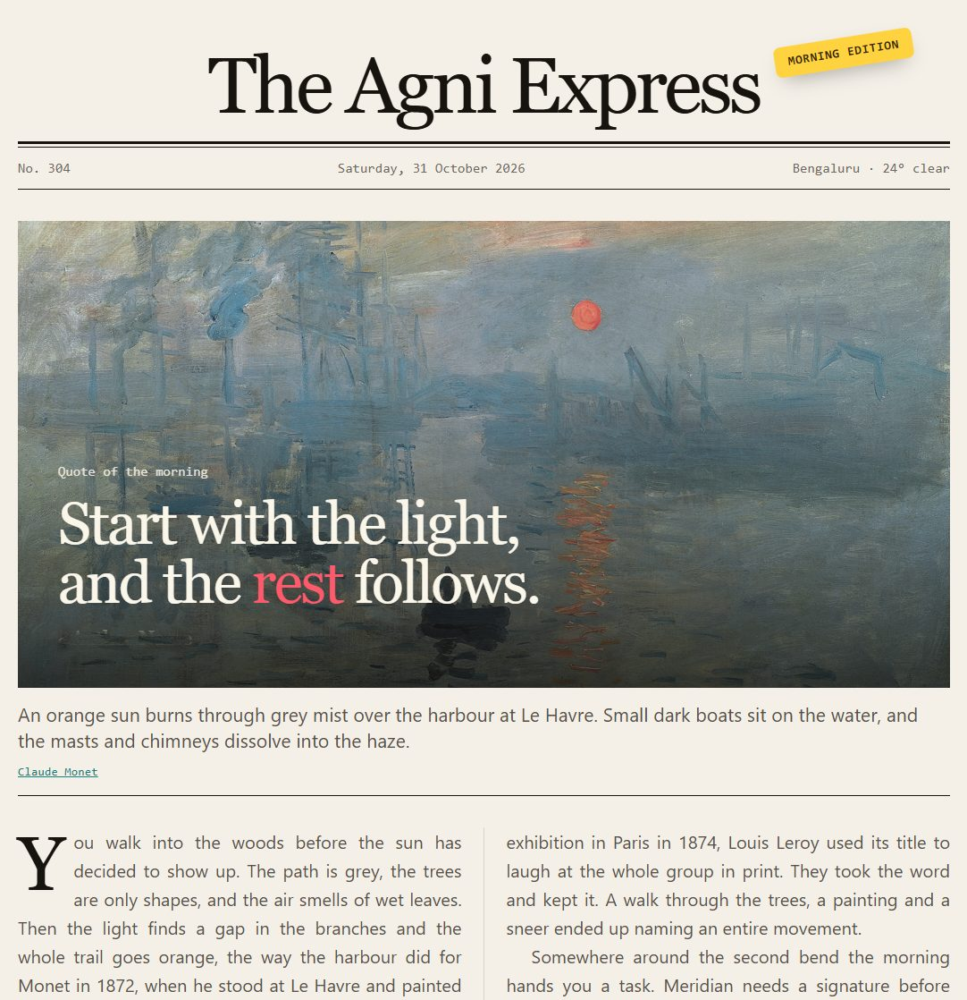

Message the bots that do the work.
Each bot has its own name, its own job and its own memory. You text them like a friend, and the server runs on your own machine.

Who am I actually talking to?
One bot for each kind of job.
You message the front desk. It answers what it can and hands the heavy work to the bot built for it, then brings the answer back.
Rename any of them, or put two or more in one room and use @name to choose who replies. Each keeps its own memory.
- New Bot
Front desk. Replies fast, decides who should do the work, and brings the answers back.
- Researcher
Finds sources on the open web and returns a brief with links.
- Coder
Reads, writes and runs code in the workspace.
- Analyst
Compares options, names the trade-offs, and recommends one.
- Your next bot
Name it, describe its job, and pick the model it runs on.
What did I miss while I was asleep?
Your own morning brief, every day.
At 07:55 your time, one message lands in your chat with your open tasks, the links you saved and what your bot remembers. You get a notification, and nothing else to open.
Morning brief
TasksRenew the lease, due Friday
Recently saved linksCity housing rules
Recent memoriesYou prefer replies before 10:00
The brief as it arrives today, with example content.

What happens when I close the tab?
The work keeps going, and you hear about it.
- Background jobs
- Ask for something long and it runs on the server, not in your browser.
- Routines
- Recurring checks on a schedule. If nothing changed, the model is never called.
- Handoffs
- Bots pass work to each other, and you can see who did what.
- Tasks and reminders
- Your bots track what is open, and remind you at the time you set.
- Push notifications
- The web app can alert you even when the tab is closed.
- Bot debugger
- See every turn, every tool call, and why a run stopped.
Will it do things without asking me?
Not the things that matter.
Risky actions stop and wait for you. Press a button on the right to see how it feels.
- Shell commands
- Writing files outside its scratch space
- Sending email from your account, or changing your calendar
- Payments
What are the rules on rent increases for our lease?
Found the city housing rule and two tenant guides. Each claim links to its source.
Rent can rise once every twelve months, with 60 days' written notice. I drafted a reply to your landlord.
Needs your approval: send this reply from your Gmail.
An example thread. Nothing here is really sent.
Will it keep me waiting?
Speed comes before polish.
- 1.5 s
- The target for a typical reply. The
agni benchcheck fails if the median goes above it. - 30 s
- The wait for a first word. Replies stream in as they are written. If a model stays silent, Agni tries the next provider you set up.
- 2 min
- The limit for one turn. Longer work can run as a background job.
- 16
- Recent messages sent with each prompt. Older ones are summarised, so requests stay small.
- 0
- Repeated words when a provider fails. It only switches provider before the first token. If a stream dies mid-answer, you get an error.
Where does all my stuff live?
On your machine, in one folder.
Your chats, memory and settings stay in ~/.agni. The server starts when you log in and listens only on your own machine by default. A one-time code pairs your browser.
Model keys stay on the server and never reach the apps. What you ask does go to the model provider you pick, unless you run a local one with LM Studio.
- Models
- Groq, Cerebras, NVIDIA NIM, Gemini, OpenRouter and LM Studio, or your ChatGPT plan. Each bot can use its own.
- Connected
- Gmail, Google Calendar, Google Drive, Firecrawl for web search, and Granola, Notion or other MCP servers.
- Planned
- Slack and Discord. Not built yet.
How do I start?
Two commands, then say hi.
Install it. You need Bun 1.3 or newer, on macOS or Linux.
npm i -g agni-botSet it up. This creates
~/.agni, installs the login service, and opens the app already paired.agni setupGive it a model. Open Settings, then Models & providers. Add a free key or connect your ChatGPT plan, and your first bot is ready.
Coming in 2027